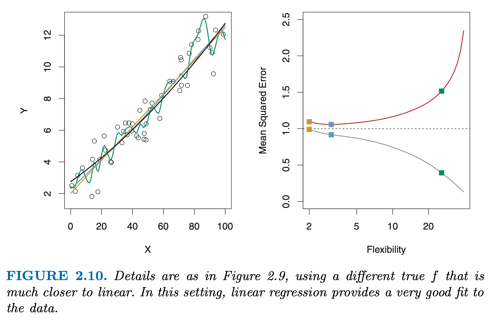

Why estimate \(f\)?
Two reasons: * prediction * inference
Prediction
Most of the time we have \(X\) but we might not have \(Y\). In this setting, since the error term averages to zero, we can predict \(Y\) using
\[
\hat{Y} = \hat{f}X
\] (2.2)
Here \(\hat{f}\) is treated as a black box. We are not concerned with the exact form of \(\hat{f}\), we just want to have accurate predictions of \(Y\).
Imagine we have \(X = (X_1, X_2, \dots, X_p)\); blood sample characteristics of patients. \(Y\) is a variable showing the patient’s risk for a adverse reaction to a drug. We don’t want to give the drug and see the reaction, so we want to predict reactions.
The accuracy of our predictions \(\hat{Y}\) of \(Y\), depends on two quantities:
reducible error
Generally \(\hat{f}\) will not be a perfect estimate for \(f\). This inaccuracy will introduce some error, which we call reducible error since we can improve our accuracy of \(\hat{f}\) using the most appropriate statistical leraning method.
irreducible error
Even if we estimate \(f\) perfectly, our estimated response would take the form \(\hat{Y} = f(X)\); our predictions would still get some error. This is because \(Y\) is not just a function of \(X\) but also a function of \(\epsilon\), which cannot be predicted by \(X\). So the level of \(\epsilon\) would also effect our prediciton accuracy. And we cannot remove this error; thus, irreducible.
\(\epsilon\) is larger than zero; because \(\epsilon\) may contain some variables we don’t include in our model, but effect \(Y\).
Inference
Here we want to understand the way that \(Y\) is affected by \(X\). In this setting, we wish to estimate \(f\) but we are not concerned with predicting. We want to understand the relationship between \(X\) and \(Y\); how \(Y\) changes as \(X\) changes. We don’t treate \(\hat{f}\) as a black box now since we need to know its exact form. In this setting we are interested in answering questions such as
Which predictors are associated with the response?
Usually not all predictors are associated with \(Y\). We need to identify the important predictors among a large set of possible predictors.
What is the relationship between the response and each predictor?
Some predictors have positive some negative association with \(Y\). Depending on the complexity of \(f\), the relationship between \(Y\) and \(X_i\) may also depend on the values of other predictors(\(X_j\)) => synergy
Can the relationship between \(Y\) and each predictor be adequately summarized using a linear equation, or is the relationship more complicated?
Sometimes we are interested with prediction: Identifying individuals who will respond positively to a mailing, based on observations of demographic variables. Here we are not interested with understanding the relationship of demographic variables and response, we just want an accurate model to predict the response using the predictors. This is prediction.
But often we are interested to answer questions like: Which media contribute to sales?, Which media generate the biggest boost in sales?, or How much increase in sales is associated with a given increase in TV advertising?. This is inference.
And sometimes we want a combination of both: Values of homes based on crime rate, zoning, distance from a river, air quality, schools, size of houses etc. and How does air quality effect valeus of homes?.
We use different models for prediction, inference, or combination of the two.
How Do We Estimate \(f\)?
There are many linear and non-linaer approaches we will discuss. But generally these models share certain characteristics. Here are they:
- We will always assume that we have observed a set of n different data points. These data points, observations, are called training data; which we will use these observations to train, or teach, our model on how to estimate \(f\). Our training data will consist of \(\{(x_1,y_1), (x_2,y_2), \dots, (x_n,y_n)\}\), where \(x_i = (x_{i1}, x_{i2}, \dots, x_{ip})^T\)
We want to apply a statistical learning method to the training data to estimate the unknown function \(f\). We want to find a function \(\hat{f}\) such that \(Y \approx \hat{f}(X)\) for any obsrvation \((X,Y)\).
These statistical learning methods can be charactarized as either parametric or non-parametric.
Parametric Methods
Parametric methods involve a two step model-based approach:
- Select a model => Make an assumption about the functional form of \(f\): is it linear, non linear?
For example a linear \(f\) assumption would yield a linear model
\[
f(X) = \beta_0 + \beta_1X_1 + \beta_2X_2 + \dots + \beta_pX_p
\] (2.4)
- Fit or train the model
After we select a model, we need a procedure that uses training data to fit or train the model.
For linear model, we need to estimate the parameters of the model (\(\beta_0, \beta_1, \dots, \beta_p\)). That is we want to find values of these parameters such that \[
Y \approx \beta_0 + \beta_1X_1 + \beta_2X_2 + \dots + \beta_pX_p
\] The most common approach to fitting the model (2.4) is called ordinary least squares. Chapter3. But there are other approaches as well.
This model-based approach is called parametric: we estimate \(f\) via estimating a set of parameters.
Disadvantage (potential): model we choose will usually not match the true unknown form of \(f\) => our estimates will be poor. => solution: choose a flexible model that can fit different possible functional forms for \(f\) => you will need to estimate more parametrs => overfitting the data.
Non-parametric Methods
=> No explicit assumptions about the functional form of \(f\). The goal is to get an estimate of \(f\) that gets as close to the data points as possible without being too rough or wiggly => advantage over parametric approach: no assumption about the functional form of \(f\)–potentially accurately fit a wider range of possible shapes for \(f\).
Disadvantage => lots of parameters to estimate => very large of observations required to obtain an accurate estimate for \(f\).
The Trade-Off Between Prediction Accuracy and Model Interpretability
Some models are flexible some restrictive; in the sense that they can produce just a small range of functional forms to estimate \(f\). Linear regression for instance is a relatively inflexible approach. Other metgods such as thin plate splines (non-parametric) are more flexible because they can generate a much wider range of possible functional forms to estimate \(f\).
Why would be ever choose to use a more restrictive method instead of a very flexible approach? :
If we are mainly interested in inference, restrictive models are more interpretable. They give more information about each predictors effect on predicted.
If we are mainly interested in prediction, flexible models give better fit. => but may yield less accurate fits due to overfitting!
Supervised vs Unsupervised Learning
Most statistical learning problems fall into these two categories: supervised or unsupervised.
In supervised learning for each observation of the predictor values \(x_i, i = 1,\dots, n\) there is an associated response value \(y_i\). We wish to fit a model that relates the response to the predictors with the aims of either accurately predicting the response for future observations (prediction) or better understanding the relationship between the response and the predictors (inference). Linear regression, GAM, boosting, support vector machines operate in the supervised learning domain.
Unsupervised leraning describes a situtaion in which for every observation \(i=1,\dots,n\) we obser a vector of values \(x_i\) but no associated response \(y_i\). We cannot use a linear regression model since we dont have \(y_i\) values. Here we can seek to understand the relationships between the variables or between the observations; like cluster analysis, or clustering: to assert on the basis of \(x_i,\dots,x_n\) whether the observations fall into relatively distinct groups.
Assessing Model Accuracy
There is no one method that dominates all others over all possible data sets. On a particular data set, one metghod may work best, but some other method may work better on a similar but differet data set. So it is important to assess the model accuracies of the methods.
Here some ways to asses the model accuracy
Measuring the Quality of Fit
So, to evaluate the performance of a statistical learning method on a given data set, we need to measure how well its predictions actually match the observed data.
In the regression setting, the most commonly-used measure is the mean squared error (MSE), given by
\[
\text{MSE} = \frac{1}{n}\sum_{i=1}^n(y_i - \hat{f}(x_i))^2
\]
MSE will be small if the predicted responses are veryt close to the true responses, and large if predicted and true responses differ substantially on average.
Here since MSE is computed using the training data it is best to refer it as training MSE. But in general, we do not really care how well the method works on the training data => we are interested in the accuracy of the predictions that we obtain when we apply our method to previously unseen test data.
Imagine: stock price prediction => we have training and test data => we already know the stock prices of the past, we dont care about the training data accuracy of the model, we want our model to predict the future prices of stocks best.
Or we have blood characteristics of diabetes patients. We don’t want our model to explain our existing patient’s classification of diabetes or not, we want our model to predict our future patien’s situation the best.
Mathematically:
We fit our statistical learning method on our training observations \(\{(x_1,y_1), (x_2,y_2), \dots, (x_n,y_n)\}\), and we obtain the estimate \(\hat{f}\). We can then compute \(\hat{f}(x_1),\dots, \hat{f}(x_n)\). If these are approximately equal to \(y_1, \dots, y_n\) then our training MSE will be small. Howeer, we are not interested in whether \(y_i \approx \hat{f}(x_i)\), we want to know whether \(\hat{f}(x_0)\) is approximately equal to \(y_0\), where \((x_0,y_0)\) is a previously unseen test obsrevation not used to train the statistical learning method.
That is, we want to choose the method that gives the lowest test MSE!.
So with our test data we can compute test MSE
\[
\text{MSE}_{test} =\frac{1}{n_{test}} \sum(y_{test_{i}} - \hat{f}(X_{test_i}))
\] (2.6)
We want the test MSE to be small as possible. We can compute test MSE via (2.6) if we have test data for different models and select the model with minimum test MSE.
If we don’t have a test data, you might think our goal would be to minimize the training MSE since test and training data are colesly related. But no; minimal training MSE doesn’t guarantee minimal training MSE
Usually as the level of flexibility increases, the curves fit the observed data more closely => lower training MSE. The level of flexibility is quantified by degrees of freedom. More restricted models have lower degrees of freedom. and usually the training MSE declines as flexibility increases.
As the flexibility of the statistical learning method increases, we observe a monotone decrease in the training MSE and a \(U\)-shape in the test MSE. This is a fundamental property of statistical learning that holds regardless of the particular data set at hand and regardless of the statistical method being used. AS model flexibility increases, training MSE will decrease, but the test MSE may not. When a given method yields a small training MSE but a large test MSE, we are said to be overfitting the data. This happens because our statistical learninig procedure is working too hard to find patterns in the training data, and may be picking up some patterns that are just caused by random change rather than by true properties of the unknown function \(f\). When we overfit the trainin data, the test MSE will be very large because the supposed patterns that the method found in the training data simply don’t exist in the test data.
Note that regardless of whether or not overfitting has occured, we almost always expect the training MSE to be smaller than the test MSE because most statistical learning methods either directly or inderectly seek to mimizie the training MSE. Overfitting refers specifically to the case in which a less flexible model would have yielded a smaller test MSE.
In practice, training MSE is computed easily, but estimating test MSE is hard because usually no test data are available. We will learn approaches that can be used in practice to estimate the mininmum test MSE. One important method is cross-validation( Chapter 5), which is a method for estimating test MSE using the training data.
The Bias-Variance Trade-Off
The U-shape in the test MSE result of two competing properties of statistical learnig methods. The expected test MSE, for a given value \(x_0\) can always be decomposed into sum of variance of \(\hat{f}(x_0)\), the squared bias of \(\hat{f}(x_0)\) and the variance of the error terms \(\epsilon\). That is
This means that to minimize the expected test error, we need to simultaneously have low variance and low bias. Since variance is always bigger than zero; \(\text{Var}(\epsilon)\), and \(\text{Bias}(\hat{f}(x_0))\) are nonnegative. So, the expected test MSE can never lie below \(\text{Var}(\epsilon)\), the irreducible error from (2.3).
What do we mean by the variance and bias of statistical learning method?
Varince refers to the amount by which \(\hat{f}\) would change if we estimated it using a different training data set; different training data sets will result in a different \(\hat{f}\). But ideally, \(\hat{f}\) should not vary too much between training sets. If a method has high variance small changes in the training data can result in large changes in \(\hat{f}\).
Flexible methods have hiher variance, because they fit better to the data points and changing any of the data points may cause the estiamte \(\hat{f}\) to chance considerably. But for example, least squares method is relatively inflexible and has low variance, because mooving any single observation will cause only a small shift in the position of the line.(2.9)
bias refers to the error that is due to functional form of \(\hat{f}\). In real life, linear relationships are very rare. So performing linear regression will result in some bias in the estimate of \(f\). If your \(f\) is non-linear performing linear regression on different data sets will not produce an accurate estimate; so linear regression will result in high bias.
For example in 2.9 true \(f\) is non linear; so linear regression have high bias, low variance. 
In 2.10 true \(f\) is very close to linear, so linaer regression have low bias, low variance.
Generally more flexible methods result in less bias.
As a general rule, as we use more flexible methods the variance will increase and bias will decrease. The relative rate of change of these two quantities determines whether test MSE increases or decreases. As we increase the flexibility, the bias tends to initially decrease faster than the variance increases => test MSE declines. However, at some point increasing flexibility has little impact on thebias but starts to significantly increase the variance => test MSE increases.

Figure 2.12 shows bias and variance effect to the test MSE for different \(f\)s. Horizontal dashed line represents \(\text{Var}(\epsilon)\), the irreducible error; the red curve test MSE is the sum of squared bias, variance, and variance of irreducible error. In all cases bias decreases as flexibility increaes. However, the optimal flexibility is different for each \(f\). In the left panel the bias initially decreaes rapidly, decreasing test MSE. In center panel true \(f\) is closer to linear so there is only a small decrease in bias as flexibility increaes, and the test MSE only declines slightly before increasing rapidly as the variance increaes. Right hand panel, as flexibility increaess bias dramatically decreases because true \(f\) is very non-linear. There is alsso very little increase in variance as flexibility increases => tets MSE decreases before increasing.
This is called bias-variance trade off. Good test set performance of a method requires low variance as well as low squared bias. This is a trade off because it is easy to obtain a method with extremely low bias but high variance(for instance, drawing a curve that passes through every single training observation, or a method with low variance but high bias(by fitting a horizontal line to the data). Challange is finding a method wihch both the variance and squareed bias are low.
In real life, it is not possible to explicitly compute the test MSE, bias, or variance for methods. But we should keep this in mind.
The Classification Setting
So far we focused on regression setting. Problems such as bias-variance trade of also occurs in classification but in a modificated way because \(y_i\) is no longer numerical.
Suppose that we seek to estiamte \(f\) on the basis of training observations \(\{(x_1,y_1), \dots, (x_n,y_n)\}\) where now \(y_1,\dots, y_n\) are qualitative.
We need to quantify the accuracy of our estimate \(\hat{f}\). We can use the training error rate, the proportion of mistakes that are made if we apply our estimate \(\hat{f}\) to the training observations:
\[
\text{error rate}=\frac{1}{n}\sum^n_{i=1}I(y_i \neq \hat{y_i})
\] (2.8)
\(\hat{y_i}\) is the predicted class label for the \(i\)th observation using \(\hat{f}\). \(I(y_i \neq \hat{y_i})\) is an indicator variable that equals 1 if \(y_i \neq \hat{y_i}\) and zero if \({y_i = \hat{y_i}}\). If \(I(y_i \neq \hat{y_i}) = 0\) then \(i\)th observation was classified correctly, otherwise it was misclassified. So (2.8) computes the fraction of incorrect classifications.
(2.8) is training error. But as the regression setting we are more interested in test error rate. The test error rate associated with a set of test observations of the form
\[
\text{error rate}_{test} = \frac{1}{n_{test}}\sum_{i=1}^{n_{test}}(I(y_{test_i} \neq \hat{y}_{test_i}))
\] (2.9)
A good classifier is one for which the test error is smallest.
The Bayes Classifier
We can minimize test error rate by a very simple classifier that assigns each observation to the most likely class, given its predictor values. In other words, we should simply assign a test observation with predictor vector \(x_0\) to the class \(j\) for which
\[
Pr(Y = j | X = x_0)
\] (2.10)
is largest. This is conditional probability: it is the probabilty that \(Y=j\) given the observed predictor vector \(x_0\). This classifier is called Bayes classifier.
In a two-class problem where there are only two possible response values, class 1 or class2, the Bayes classifier corresponds to predicting class one if \(Pr(Y=1 | X = x_0) > 0.5\), and class two otherwise.
Imagine having \(X = (X_1, X_2)\). For each value of \(X_1\) and \(X_2\) there will be a different probability of the response being class 1 or 2. For \(Pr(Y=class1 | X = (X_2,X_2)) > 0.5\) and \(Pr(Y=class2 | X = (X_1,X_2))\).
The Bayes classifier produces the lowest possible test error rate, called the Bayes error rate. Since the Bayes classifer will always choose the class for which \(Pr(Y = j | X = x_0)\) is largest, the error rate at \(X=x_0\) will be \(1-\max_jPr(Y =j | X = x_0)\). In general, the overall Bayes error rate is given by
\[
\text{Bayes error rate} = 1 - E(\max_jPr(Y =j | X))
\] (2.11)
where the expectation averages the probabilty over all possible values of X. The Bayes eror rate is analogous to the irreducible eror.
K-Nearest Neighbors
In theory we always want to predict qualitative responses using the Bayes classifier. But for real data, we do not know the conditional distribution of \(Y\) given \(X\), and so computing the Bayes classfier is impossible. So Bayes classifier is like a gold standard to compare other methods.
Many approaches attemp to estiamte the conditional distribution of \(Y\) given \(X\), and then classify a given observation to the class with highest estimated probability. One of them is K-nearest neighbors(KNN) classfier.
Given a positive integer K and a test observation \(x_0\), the KNN clasffier first identifies the K points in the training data that are closest to \(x_0\), represented by \(N_0\). It then esitmates the conditional probability for class j as the fraction points in \(N_0\) whose response values equal to \(j\).
\[
Pr(Y = j | X = x_0) = \frac{1}{K}\sum_{i \in N_0}I(y_i=j)
\] (2.12)
Finally, KNN applies Bayes rule and classifies the test observation \(x_0\) to the class with the largest probability.
Figure 2.14 provides an illustrative example of the KNN approach. Left panel => Our goal is to make prediction for the black cross point. When \(K=3\) KNN will identify the 3 oservations that are closest to the cross. There are two blue and one orange points; \(Pr(Y=orange | X = x_{cross}) = 1/3\), and \(Pr(Y=blue | X = x_{cross}) = 2/3\) => KNN will predict that the black cross belongs to the blue class.
The choice of K is very important. as K increases flexibility decreases => high bias, but low variance.
Just like in regression setting there is not a strong relationship between the training error rate and the test error rate.
as in the regression setting, the training error rate consistently declines as the flexibility(\(1/K\)) increases. However, the test error rate again have a characteristic U-shape.
In both regression and classification settings, choosing the correct level of flexibility is critical. The bias-variance tradeoff => U-shape in the test error, can make this a difficult task.